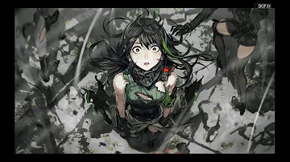
5:26
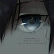
【Glass Animals/易碎動物】The Other
Side of Paradise/天堂的另一面【中文翻譯】
光耀之夜
觀看次數 : 144萬次 ‧ 3年前

3:32
BE ME
Doul
觀看次數:183萬次‧10個月前
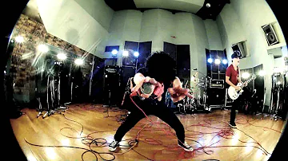
4:10

ONE OK ROCK - NO SCARED [Official
Music Video]
ONE OK ROCK
觀看次數:2276萬次‧11年前
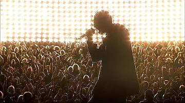
2:49

Faint (Official Music Video) [4K
UPGRADE] – Linkin Park
Linkin Park
觀看次數:4.1億次‧14年前
2:28
Fly Me To The Moon (2008 Remastered)
Frank Sinatra
觀看次數:1.5億次‧4年前
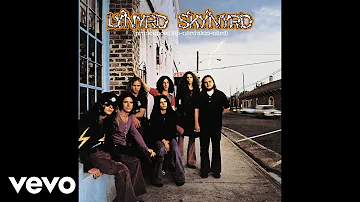
9:11

Lynyrd Skynyrd - Free Bird (Official Audio)
Lynyrd Skynyrd
觀看次數:1665萬次‧10個月前

3:57

Freedom - Django Unchained
Rudinik I.N.C
觀看次數:9474萬次‧10年前
.webp)
7:04
MACKLEMORE & RYAN LEWIS -
CAN'T HOLD US FEAT. RAY DALTON (OFFICIAL MUSIC VIDEO)
Macklemore
觀看次數:10億次‧10年前
Shorts

Toca Toca Anime | Dance
Tutorial (Slowed & Mirrored)
Tutorial (Slowed & Mirrored)
觀看次數：1407萬次
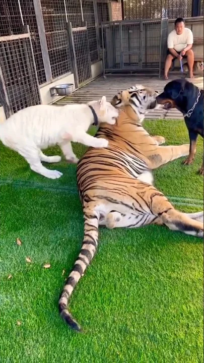
Baby Snowy fun with kenzo
and dog 😻😂
and dog 😻😂
觀看次數：1546萬次
"Suzume" who sang it better
すずめ (Suzume) ft. 十明 - Suzume no Tojimari | Music covers competition
すずめ (Suzume) ft. 十明 - Suzume no Tojimari | Music covers competition
觀看次數：100萬次
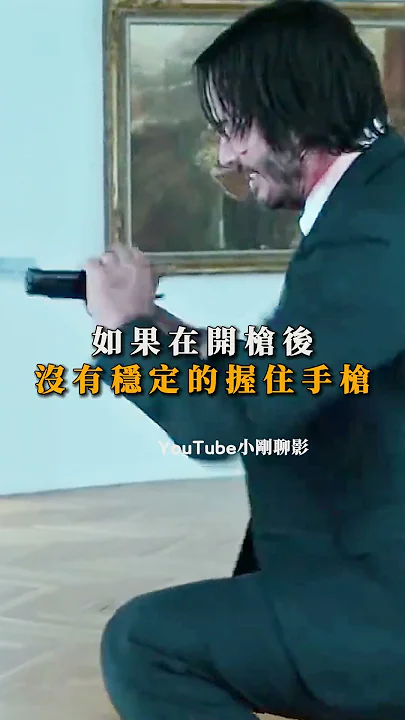
為什麼要對「這把槍」進行
槍膛檢查的動作？《捍衛任務》
槍膛檢查的動作？《捍衛任務》
觀看次數：70萬次
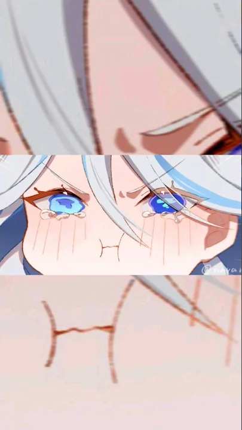
Water Archon Cries🥰
#genshinimpact #furina #neuville #shorts @GenshinImpact
#genshinimpact #furina #neuville #shorts @GenshinImpact
觀看次數：116萬次
This might just be the coolest
gaming chair around! 🦂🔥 #supercarblondie #gaming #technology
gaming chair around! 🦂🔥 #supercarblondie #gaming #technology
觀看次數：1102萬次
顯示完整資訊
0:07
四眼田雞，你在看什麼啊?
Xu MR
觀看次數:7.2萬次‧2年前
0:20
海綿寶寶-嘻哈酷老頭 超勁爆!!
KevinBearr
觀看次數:26萬次‧4年前

13:24

Knife Making - Brass Titanium Frame
Lock Folder
Koss
觀看次數:461萬次‧2年前
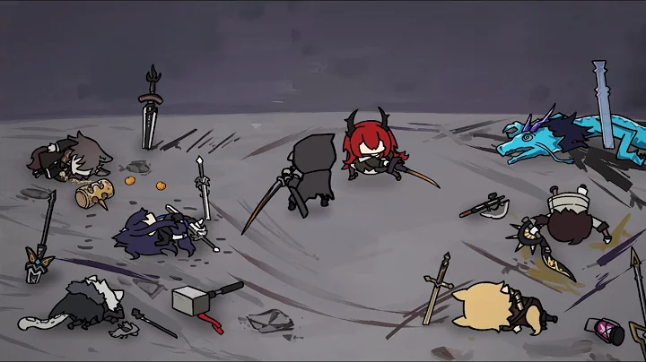
0:50
[ARKNIGHTS] Doc's Operation Basepoint
harlequin wheels
觀看次數:22萬次‧3週前
0:16
Mococo Beam
超級蘋果人SuperAppleMan
觀看次數:37萬次‧1個月前
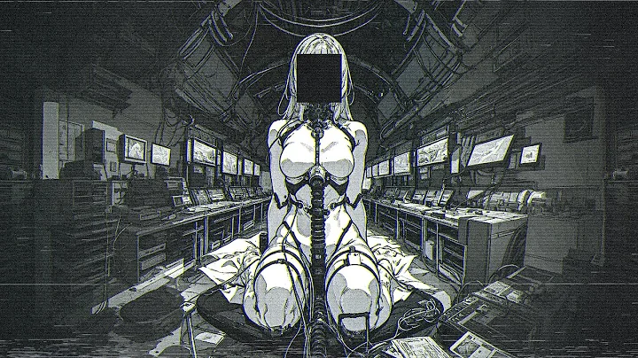
3:56
Memory Reboot - Slowed
MrMoMMusic
觀看次數:73萬次‧1個月前
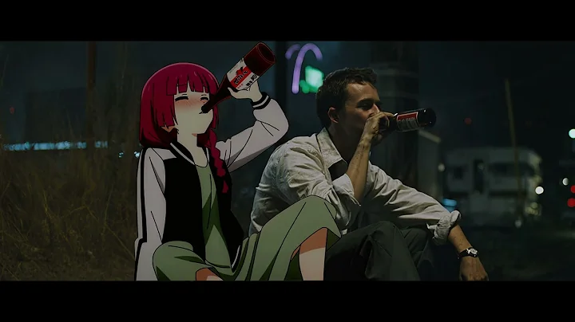
3:59
Just The Two Of Us(4K wallpaper version)
A freehug
觀看次數:169萬次‧7個月前
14:31
Chord-Melody Jazz Guitar Lesson | Full
Practice Routine in C
swiftlessons
觀看次數:51萬次‧3年前